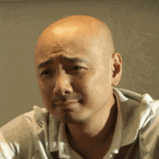
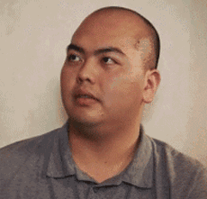

是你上了大学，还是大学上了你？
十年寒窗苦读，终于上了大学，可大学该怎么上，真的好好想过吗？有人说：“不思考的人生不值得过”，借用这句话我想说“不经规划的大学生活，也不值得过”。
古人云：”凡事预则立，不预则废“，上大学也是一样，来到这里，3-5年的大学生活，丰富多彩，知识学习、社会实践、职业规划、考研、恋爱等等，都要好好的规划该怎么过，才对得起这几年的青春，才能再致青春时说，大学几年是我青春之最绚烂的时光。
一千个读者就有一千个哈姆雷特，大学生活也是一样，不同的人也会有不同的规划，今天不想讲那么多的道理，只想说一些人，讲讲他们的大学生活怎么过，也许你能有所启迪，有所收获，或者找到些许自己的影子，那就足矣。
1、考研也可以有多种玩法
大王是山东人，学习狂人，刚进学校他和我还有班长轮子，组成了三剑客。大王刚进学校时就说：”我来这上大学的唯一目的就是离开这“，他的意思就是希望四年后通过考研进入更好的大学深造。所以他大学四年的生活像个苦行僧，基本上就是课堂、自习室、图书馆，几年来雄霸我们专业第一名，还在大一的时候就已开始规划将来考哪个学校，报什么专业、选哪个导师，就这么一步一步水到渠成。
当年以很高的分数考上了自己想上的名校，选到了自己想选的导师，他的导师是中国这个专业最好的导师，几乎没有之一，更让人惊喜的是，考研准备期间还认识了其它系的妹子，两个人都想考同一所大学，这样成了男女朋友，研究生毕业后也修成正果。
轮子也是想考研的，但他和大王不一样，他希望自己更全面，虽然在班上他的年纪最小，但却是我们的班长。我们大家都都爱他，不只是因为他年纪小，更重要的是他真的乐于助人，而且性格极好，所以大学几年交了很多朋友，也锻炼了自己的领导能力。到了大三才开始想考研的事，因为底子打得不够牢，通过报辅导班的方式弥补了一些不足，最后毫厘之间考入了同济大学。
还有一个女孩子，让我大吃一惊，她是跨专业考上了清华大学物理系，研究的是理论物理，大学四年她不太爱说话，不太合群，天天泡图书馆看得都是物理学，乐在其中，现在想想这个女孩子也算是我们专业的一个传奇女子了。
考研这个事，你可以咬定青山不放松，也可以一颗红心两手准备，要怎么样就看你怎么想。
2、混社团，也要混个脸熟
大荣是我们班上混社团混得最好的一个，四年来奔走与各大学社团，积极参与系里的工作，成了我们辅导员的左右手，后来还做了导员助理分担学生工作，毕业后积累的管理经验也让自己一步步走上了领导的岗位，现在大家都喊他刘总。
我在上大学时也喜欢混社团，而且混了很多社团，但最终因为各种原因能坚持下来的也只有大学生记者团，在这里认识了很多优秀的人。还记得记者团的团长超群哥，文章写得一级棒，毕业后就靠文字谋生，记者团的工作真的成了他职业发展的起点。
其实混社团就是混圈子，但是请记住，圈子不同不必强融。
3、打工还是创业，想好了做个行动派
一些人是天生的创业者，压根没想过毕业后要给别人打工。当时我认识了一个非计算机系的编程牛人，人家看的技术书籍都是英文的，足足有一米多高，上学的时候已经开始在外面接私活，毕业后作为技术合伙人创办了自己的技术公司，现在的身价已让我望尘莫及了。
我在大学里学的专业自己不喜欢，到大二的时候我就开始旁听计算机系的课程，后来还辅修了计算机专业，课余时间自己又学了C++，还有一些网络编程语言，帮着导师做仿真系统打下了很好的基础，这也为我毕业后，选择转行做IT铺好了道路。
不管是以后创业做老板，还是做一份自己喜欢的工作，要好好规划自己未来的路，想好了就行动起来，不要做思想上的巨人，行动上的矮子。
4、谈个恋爱也不错，万一成了呢
大学里自然少不了一些风花雪月的事，不谈个恋爱就觉得大学生活少了点什么，面对爱情有人怯懦，有人大胆，有人含蓄，有人疯狂。我还记得我们宿舍的老五明明喜欢人家却不敢表白，还是别人帮他传话，结果人家姑娘没屌他，死得很惨。还有前面说得班长轮子，天天卧谈会说喜欢经管系的一个小姑娘，可就是不敢付出行动，结果错过了就再也找不回来了。
都说兔子不吃窝边草，可我们班上就自产自销了两对，直到毕业也没分开，现在也都结了婚，有了孩子，成为我们班的典范。
都说网恋不靠谱，可我的一个同学从大四找好工作，确定了要去的城市然，就开始在QQ上聊那个城市的女孩，结果在毕业前竟然聊成了，毕业工作后留在了那个城市，感情也慢慢稳定下来。
大学中的恋爱也许在你的规划中，也许不期而遇，亦或只是瞬间的动心，这都是美好的回忆。谈个恋爱也不错，万一要成了呢？
大学生时光是用来浪费的，即便是浪费也请你用心规划让她浪费在美好的事情上，当你离开这段岁月时，可以骄傲的说TMD大学，我终于上了你！
姓名：
昵称：老子那年十八
专业：计算机
生日：1992-03-18
职位：前端工程师
爱好：诗和远方
王子公主
——薛之谦
- 

- 